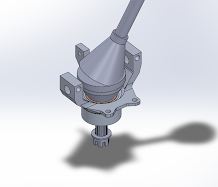

Front upright
The part that ties the wheel, steering, and suspension together, redesigned to be lighter without giving up strength.
0.22 → 3.5Minimum factor of safety after six FEA iterations
I design parts and the fixtures that make them, then machine them myself. Right now that means an electronically actuated CVT for Baja SAE, metal additive manufacturing research, and running a 4,000-user university shop.
Each project page walks through the problem, the analysis, and what got built.

The part that ties the wheel, steering, and suspension together, redesigned to be lighter without giving up strength.
0.22 → 3.5Minimum factor of safety after six FEA iterations
An electronically actuated CVT for the team’s car, with a ball screw setting the primary sheave.
892 lbfPeak shift force, with a 0.5 s full-shift target
A welding fixture that holds every tube of the suspension H-arm in its final position, and a hard lesson in tolerance stack-up.
A sheet-steel guard that contains a coupler or U-joint failure, packaged into a very tight space and easy to remove for service.
A quieter hair dryer built around a toroidal fan and a sound-absorbing nozzle, refined over 30+ printed iterations.
88 → 76 dBMeasured noise, stock dryer to final prototype
A foldable ball return for a kindergarten: safe for kids ages 2 to 5, and light enough for one staff member to carry upstairs.
Jun 2026 to Sep 2026
Vast, Long Beach, CA
Tooling Manufacturing team.
May 2025 to present
Segal Design Institute, Northwestern University
I lead a team of 50 shop trainers and keep 20+ major machines running for more than 4,000 students and faculty, covering scheduling, maintenance, inventory, and safety. As a trainer I taught 300+ students to run the lathe, mill, and laser cutter, and gave design-for-manufacturing advice on student projects every week.
Sep 2025 to present
Northwestern Initiative for Manufacturing Science and Innovation, Prof. Jian Cao
Directed energy deposition, a metal additive manufacturing process, on a custom-built machine. I design fixtures, tooling, and sample geometries in SolidWorks, prepare printed samples by cutting and metallographic polishing, and image them with optical microscopy for process validation and material characterization.
Sep 2025 to present
NUSTARS Lunabotics, Northwestern
I machine aluminum and steel drivetrain and excavation parts on CNC mills, lathes, and the waterjet, give the design team manufacturability feedback, and assemble the chassis for NASA’s Lunabotics competition.
Sep 2024 to present
Northwestern Baja SAE
Design ownership of the front upright, suspension fixturing, the CVT coupler guard, and now the electronically actuated CVT. See the projects above.
Mar 2025 to Sep 2025
Mobility and Behavior Lab, Prof. Amanda Stathopoulos
Built a log-linear regression model in R for urban freight demand across Chicago’s 77 community areas, merging data from 20+ sources. Correcting for multicollinearity brought the variance inflation factor from over 30 to about 1, and the model showed warehousing employment predicts freight traffic better than general economic indicators.
Aug 2022 to Nov 2023
University of Michigan Climate Lab, Prof. Xianglei Huang
Trained a random forest classifier in Python to predict cloud cover from 130,000+ satellite observations, tuning it with 5-fold cross-validation to over 80% test accuracy.
I’m a builder at heart. What I enjoy most is the whole loop: shaping an idea in CAD, checking it with analysis, and then machining the parts myself.
That started at Union County Vocational-Technical Schools in New Jersey, where I was build captain for Science Olympiad. At Northwestern I study mechanical engineering with a minor in transportation and logistics and a Segal Design Certificate, and most of my time outside class is in the shop.
I’m most interested in tooling and manufacturing engineering: the fixtures, processes, and design choices that decide whether a part can be made well, repeatably.
The best way to reach me is email.